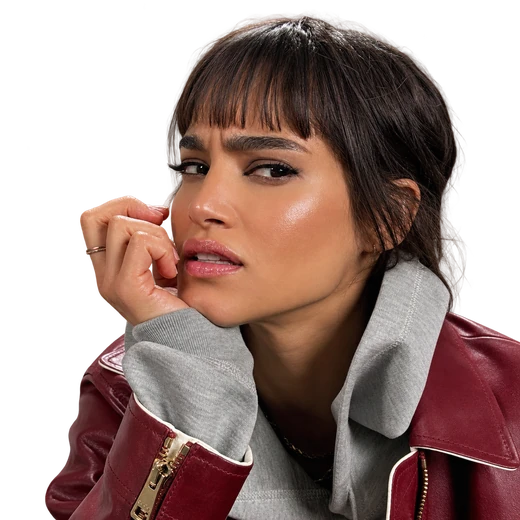
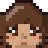

Celeste Waite
Celeste Waite é a estilista da La Boutique. Francesa de Lyon, estudou moda em Milão e tem o cabelo pintado cor de vinho.
Rotina
Dias úteis
| Hora | Lugar |
|---|---|
| 6h | Fora do centro |
| 8h30 | Café Grão Nobre |
| 9h40 | La Boutique |
| 19h10 | Fora do centro |
Fim de semana
| Hora | Lugar |
|---|---|
| 6h | Fora do centro |
| 10h | Café Grão Nobre |
| 11h | La Boutique |
| 17h | Praia |
| 19h | Noonan's |
| 21h30 | Fora do centro |
Dia de chuva
| Hora | Lugar |
|---|---|
| 6h | Fora do centro |
| 9h20 | La Boutique |
| 19h10 | Fora do centro |
Presentes
No aniversário (6 de Primavera), o presente vale mais: amado ×5, gostou ×3 e neutro ×2.
| Reação | Itens |
|---|---|
| Ama +80 pontos | |
| Gosta +45 pontos | |
| Neutro +20 pontos | Todo o resto (coletáveis e itens comuns) |
| Não gosta −20 pontos |
Eventos de coração
| Corações | Evento | Onde e quando | O que ganha |
|---|---|---|---|
| ♥ 2 | Conversa | Na próxima conversa | Presente: |
| ♥ 4 | Celeste: o caderno de croquis | La Boutique, das 16h às 22h | Cliente VIP da Celeste: 20% de desconto na La Boutique. |
| ♥ 6 | Conversa | Na próxima conversa | — |
| ♥ 8 | Celeste: o desfile no píer | no píer, ao pôr do sol: o desfile da Celeste, das 14h30 às 20h30 | Desfile da Celeste no píer! O vestido da passarela chega hoje à noite. |
Falas
“Bem-vinda à La Boutique! Fica à vontade. Se precisar de outro tamanho, é só gritar. Com elegância.”
Logo que se conhecem
“Acessório é o jeito mais barato de mudar de vida. Um brinco certo e a reunião já começa ganha.”
Com amizade
“Você virou minha cliente favorita. E olha que eu atendo a Addison Montgomery.”
Bem próximas
Mensagens no celular
Com 2 corações, ela manda mensagens de vez em quando (app Mensagens, tecla T). Responder dá amizade e carisma.
Ver as 6 mensagens e as respostas
Chegou uma bolsa de couro que é a sua cara. Não comprei pra você. Comprei pensando em você. É diferente.
- Já estou indo na Boutique! → Vou deixar ela na vitrine de cima. Só pra você ver primeiro.
- Que diferença sutil. → Moda é sutileza, querida. Mas a bolsa não é nada sutil.
- Qual cor? → Caramelo. Combina com quase tudo seu. Menos com pressa.
Vi você passando na rua com aquela roupa e quase saí correndo pra elogiar. Me controlei. Por pouco.
- Pode elogiar sempre que quiser! → Então: você estava impecável. Pronto, me sinto melhor.
- Era a roupa que você me vendeu. → Eu sei. Por isso fiquei tão orgulhosa.
- Da próxima vez, sai correndo. → Vou sair. Com fita métrica e tudo.
Desenhei três croquis hoje. Um deles tem um bolso secreto pra cartão de CEO.
- Eu preciso desse bolso secreto! → Vou fazer o primeiro sob medida. Passa pra tirar as medidas.
- Me mostra os outros dois? → Só pessoalmente. Croqui não se manda por mensagem.
- Você é genial, Celeste. → Diz isso mais alto. A vizinha da CatCo precisa ouvir.
Bonjour! Chegou seda de Lyon hoje. A caixa ainda tem o cheiro do ateliê do meu avô. Quase chorei.
- Que lindo, Celeste. → Merci, chérie. Vou fazer algo especial com ela. Talvez para você.
- Quero tocar nessa seda. → Passa na loja. Mas lava a mão antes. Seda é exigente.
- Seu avô ficaria orgulhoso. → Ele diria que a bainha está torta. E depois sorriria.
Uma cliente quis devolver um vestido porque 'ficou bonito demais'. Eu não sabia o que responder.
- Isso existe? → Agora existe. Eu disse que ela ia se acostumar. Ela ficou com o vestido.
- Diz que beleza não tem devolução. → Vou colocar uma plaquinha com isso. Em francês e em português.
- Ela vai voltar para comprar outro. → Já voltou. Levou um lenço. Bonito demais também.
Minha mãe ligou de Lyon perguntando se National City tem boas padarias. Eu disse que tem. Menti um pouquinho.
- O Grão Nobre tem croissant! → Tem. Mas croissant de verdade, chérie... é outra conversa.
- Vamos abrir uma padaria francesa. → Não me tenta. Eu já tenho o nome e o toldo na cabeça.
- Traz ela para conhecer a cidade. → Ela vem no verão. Vai querer conhecer a minha cliente famosa.
Retratos

| Luthor Corp | |
|---|---|
| CatCo | |
| Moradores |  Vittoria |
| Conti Moretti | |
| De fora da cidade |